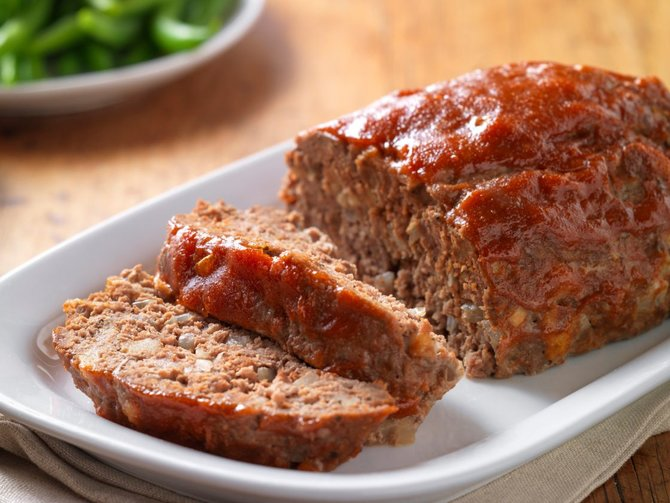

Makanan Halal dan Haram
Mengenal makanan halal dan haram
By Eureka Ahadyan Ilhamy
Lanjut
Definisi

Sebelum mengetahui jenis makanan halal dan haram, ada baiknya bagi kita untuk mengetahui
definisi
secara
lebih dalam
mengenai istilah tersebut. Baik makanan halal dan haram tersebut tak lain berasal dari Bahasa Arab yakni
halal yang
merujuk pada kata diperbolehkan, sementara itu haram sendiri yakni berarti tidak dibenarkan atau dilarang.
Istilah halal tersebut merujuk pada bahan makanan yang diperbolehkan untuk dilakukan,
dipergunakan, atau
diusahakan
serta terbebas dari berbagai hal yang membahayakan ataupun dilarang. Kebalikannya, istilah haram tersebut
dipergunakan
bagi bahan makanan yang dilarang untuk dilakukan atau dipergunakan baik lantaran kandungan zat di dalamnya
hingga cara
mendapatkannya.
Jenis makanan haram

1. Bangkai, kecuali bangkai ikan dan belalang.
2. Darah, kecuali hati dan limpa.
3. Daging Babi.
Babi dan Anjing termasuk binatang haram untuk dimakan, karena telah diharamkan oleh Allah, Rasulullah
SAW, dan para Ulama.
4. Daging hewan yang disembelih atas nama selain Allah.
5. Hewan yang mati karena tercekik, dipukul, jatuh, ditanduk, atau diterkam binatang buas.
6. Semua makanan yang jijik, yaitu yang kotor dan menjijikan.
Tikus termasuk binatang yang kotor dan menjijikkan, jadi tidak halal (haram)
7. Bagian yang dipotong dari binatang yang masih hidup.
8. Makanan yang didapat dengan cara yang tidak halal seperti makanan hasil curian, rampasan, korupsi,
riba dan cara-cara lain yang dilarang agama.
9. Binatang yang bertaring atau berkuku tajam, yang biasa ia gunakan untuk mencengkeram atau menyerang
musuh-musuhnya.
10. Binatang yang hidup di dua alam. Di antara ulama yang mengharamkan adalah sebagian ulama Syafiiyah
dan
Hanafiyah.
Contoh: katak, buaya, dan kura-kura.
Jenis makanan halal
1. Makanan Halal berdasarkan Komposisinya
Makanan halal tentu saja harus terhindar dari berbagai zat makanan haram, seperti daging hewan babi, minyak
babi, darah,
alkohol, hingga bangkai di dalamnya.
Sebaiknya, pilihlah makanan halal yang terbuat dari bahan-bahan segar, seperti sayur, buah, nasi, tepung,
ikan, telur,
serta daging hewan ternak. Adapun hewan ternak yang diperbolehkan dikonsumsi, yaitu kambing, domba, sapi dan
ayam.
Jika harus membeli makanan kemasan di supermarket maupun toko-toko terdekat, hendaknya selalu perhatikan
label atau
sertifikasi halal yang dikeluarkan BPOM dan MUI (Majelis Ulama Indonesia). Logo ini akan tercantum pada
bagian luar
kemasan produk.
2. Makanan Halal berdasarkan Cara Memasaknya
Menyembelih hewan ternak tanpa mengucap kalimat basmallah dan syahadat, tentu saja akan menjadi haram
hukumnya. Hal ini
sesuai dengan Al Quran surah Al Baqarah ayat 173 yang berbunyi:
“Sesungguhnya Allah mengharamkan bagimu bangkai, darah, daging babi, dan hewan yang ketika disembelih
menyebut nama
selain Allah. Namun, barang siapa dalam keadaan terpaksa memakannya, sedang dia tidak menginginkannya dan
tidak
melampaui batas, maka tidak ada dosa baginya. Sesungguhnya Allah S.W.T maha pengampun lagi maha penyayang.”
3. Makanan Halal berdasarkan Cara Mendapatkannya
Rezeki yang baik akan mendatangkan manfaat yang baik pula. Hal ini akan berlaku ketika seseorang mengonsumsi
makanan
halal, pasti akan memberikan ketenangan di dalam batin dan jiwanya.
Allah SWT melarang hamba-Nya untuk berbuat hal buruk demi mendapatkan makanan. Oleh sebab itu, setiap
makanan yang
dihasilkan oleh kegiatan mencuri, menipu, bertengkar, korupsi adalah haram hukumnya.
Tentu saja akan ada hikmah luar biasa, apabila seorang umat Islam selalu mengonsumsi makanan halal dan
menjauhi makanan
haram, di antaranya, yaitu:
- Mendapatkan ketenangan jiwa, rezeki yang halal, dihindarkan dari berbagai macam penyakit
- Mendapatkan ridho dan berkah dalam setiap suapan dari-Nya.